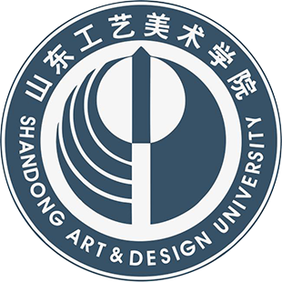

iOS 开发俱乐部旨在为 iOS 开发爱好者提供一个跨越专业与课堂的社团平台。目前国内诸多院校早已设立相应校级社团，且发展较为成熟，在国内外众多活动中斩获佳绩。基于我校现有实际情况，特此提出申请建立山东工艺美术学院 iOS Club 社团，以便为我校广大 iOS 开发爱好者提供专业老师指导与交流平台。 iOS Club 的主要活动涵盖如下四个方面:内部交流、动手实践、巩固兴趣、借鉴学习。同学们可以以该社团作为起点，跨学科体验 iOS 魔力，创造非同凡响的 App，同时拥有与全世界 iOS 开发者同台竞技、交流梦想的机会。 作为参与各项官方 iOS Club 活动的必要条件，应当尽快建立我校 iOS Club 社团。创建我校 iOS Club 社团可以为我校学生提供一个固定的社团学习、交流场地。且通过与我校视觉传达设计学院交互工作室合作，社团成员可以获得专业老师更为科学、详尽的指导与帮助。 同时在社团的组织和老师的带领下，社团成员可以参与 iOS Club 的各项官方活动，如冬/夏令营、主题沙龙等，也可以参与各项国内外相关主题大赛。成员们可以通过诸如此类的活动，获取前沿技术，提高创新思维能力，提升商业技巧，同时有机会与创造达人一起，分享改变世界的方法。 在社团日常运营方面，基于与我校视觉传达设计学院交互工作室的合作，社团将拥有雄厚的师资力量与充分的活动空间。社团核心创立成员也均为我校相关专业爱好者，有丰富的活动参与经验与组织能力，已在国内诸多相关领域比赛斩获众多佳绩。我相信，iOS Club 社团的创立，将会为我校 iOS 开发爱好者打开一扇新的大门，同时有能力有信心，将本社团打造为国内高校一流的 iOS 开发社团。
指导老师
朱小杰
邮箱
Alpha@designdaily.cn